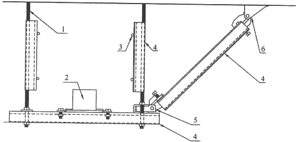
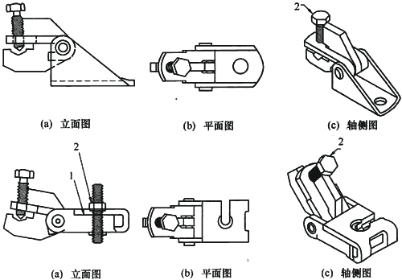
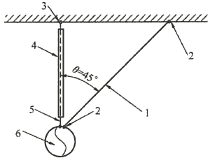
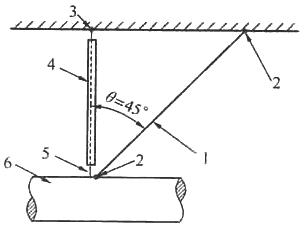
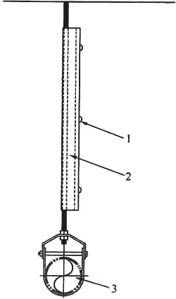
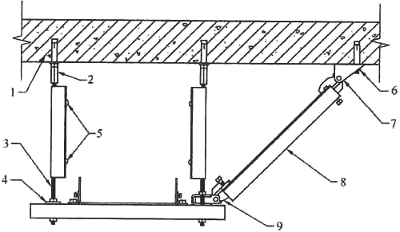

2 术语和符号
2．1 术 语
2．1．6 抗震支吊架是对机电设备及管线进行有效保护的重要抗震措施，其构成(如图1)由锚固件、加固吊杆、抗震连接构件(如图2)及抗震斜撑组成。

图1 抗震支吊架示意图
1-长螺杆；2-设备或管道等；3-螺杆紧固件；4-C形槽钢；5-快速抗震连接构件；6-抗震连接构件
2．1．7 侧向抗震支吊架(如图3)用以抵御侧向水平地震力作用。
2．1．8 纵向抗震支吊架(如图4)用以抵御纵向水平地震力作用。
2．1．9 单管(杆)抗震支吊架(如图5)是由一根承重吊架和抗震斜撑组成的抗震支吊架。
2．1．10 门型抗震支吊架(如图6)由两根及以上承重吊架和横梁、抗震斜撑组成的抗震支吊架。

图2 抗震连接构件示意图
1-缝隙；2-螺栓

图3 侧向抗震支吊架示意图
1-斜撑；2-抗震连接构件；3-锚固件；4-螺杆紧固件；5-承重吊杆；6-管道

图4 纵向抗震支吊架示意图
1-斜撑；2-抗震连接构件；3-锚固件；4-螺杆紧固件；5-承重吊杆；6-管道

图5 单管(杆)抗震支吊架示意图
1-螺杆紧固件；2-专用槽钢；3-管道或设备

图6 门型侧向抗震支吊架示意图
1-结构体；2-长螺母；3-长螺杆；4-方垫片；5-槽钢紧固件；
6-膨胀螺栓；7-抗震连接构件；8-槽钢；9-快速抗震连接构件